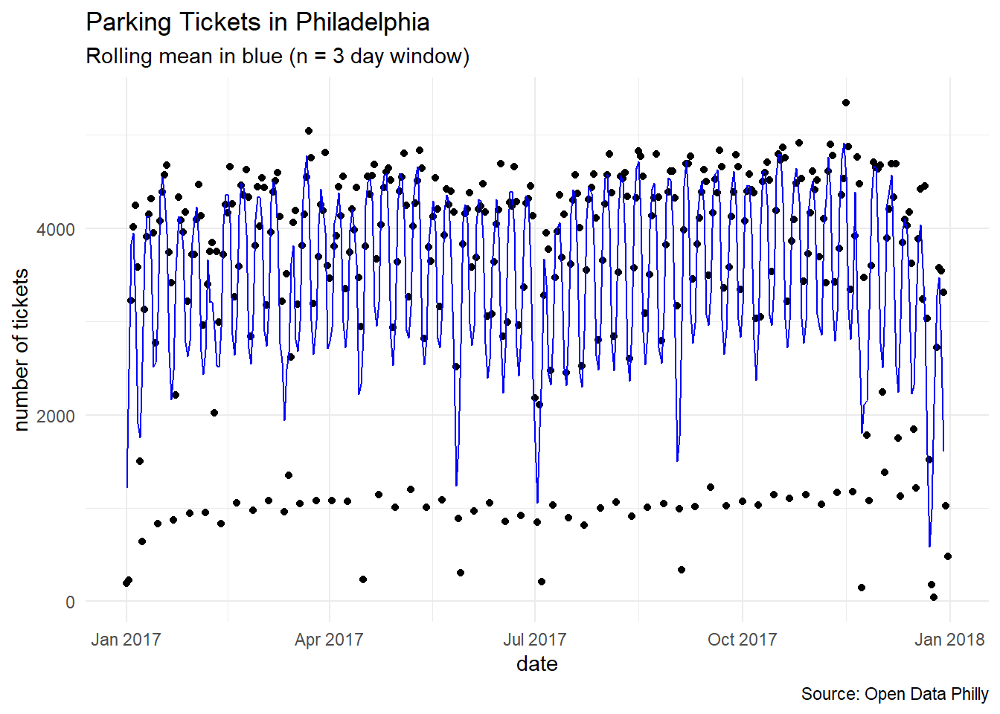

some_data <- c(32, 45, 16, 78, 39)
sum(some_data)
length(some_data)
sum(some_data) / length(some_data)
mean(some_data)SML 201
Start
Goal: Summarize data by centrality
Objective: Compute mean, median, and mode
Advice
create a folder on your computer desktop called “SML 201”
- later: place all code scripts and data sets in this folder
open RStudio and create a new Quarto document
File–>New File–>Quarto Document ...- save the file into your
SML 201folder
To run a line of code, the keyboard short cut is
- Windows: CTRL + ENTER
- Mac: CMD + ENTER
Mean
Definition
For a list of data
\[\{a_{1}, a_{2}, ..., a_{n}\}\]
the mean or average of the data is defined as
\[\bar{x} = \displaystyle\frac{1}{n}\sum_{i = 1}^{n} a_{i}\] where “x bar” denotes a sample mean
In R
Run each of these lines of code, and describe the code
Missing Data
Run each of these lines of code, and describe the code
some_data <- c(32, 45, 16, 78, NA, 39)
sum(some_data)
length(some_data)
sum(some_data) / length(some_data)
mean(some_data)
mean(some_data, na.rm = TRUE)Median
Run each of these lines of code, and describe the code
some_data <- c(32, 45, 16, 78, 39)
sort(some_data)
median(some_data)
some_data2 <- c(32, 45, 16, 78, 39, 5)
sort(some_data2)
median(some_data2)Case Study: Weights of Olympians
Loading the Data
I have supplied a couple of data sets to a GitHub repository to ease the loading of data for classroom work.
olympic_df1 <- readr::read_csv("https://raw.githubusercontent.com/dsollberger/sml201slides/main/posts/02_centrality/olympic_data.csv")
olympic_df2 <- readr::read_csv("https://raw.githubusercontent.com/dsollberger/sml201slides/main/posts/02_centrality/olympic_data2.csv")Summary Statistics
Run each of these lines of code, and describe the code
mean(olympic_df1$weight)
mean(olympic_df1$weight, na.rm = TRUE)
The fix
olympic_df1$weight[olympic_df1$weight <= 0] <- NA
olympic_df2$weight[olympic_df2$weight <= 0] <- NACase Study: Ages of Olympians
Filter
For this demonstration, let us focus on the athletes from Turkey.
Turkey_df1 <- olympic_df1 |>
filter(country_code == "TUR")Dotplot
Early in an introductory statistics course, a dotplot is useful for visualizing integer data.
mean_1 <- mean(Turkey_df1$age, na.rm = TRUE)
Turkey_df1 |>
ggplot(aes(x = age)) +
geom_dotplot() +
geom_vline(xintercept = mean_1, color = "blue", linewidth = 3) +
labs(title = "Ages of Turkish Athletics",
subtitle = "mean in blue",
caption = "SML 201")
The Outlier
- image source: News 18
Yusuf Dikec
Turkish sharpshooter
- silver medalist (2024 Olympics)
- 10m air pistol mixed team
Age: 51
Filtered Again
Turkey_df2 <- olympic_df2 |>
filter(country_code == "TUR")Dotplot Revisited
Early in an introductory statistics course, a dotplot is useful for visualizing integer data.
mean_1 <- mean(Turkey_df1$age, na.rm = TRUE)
mean_2 <- mean(Turkey_df2$age, na.rm = TRUE)
Turkey_df2 |>
ggplot(aes(x = age)) +
geom_dotplot() +
geom_vline(xintercept = mean_1, color = "blue", linewidth = 3) +
geom_vline(xintercept = mean_2, color = "blue", linewidth = 3) +
labs(title = "Ages of Turkish Athletics",
subtitle = "mean in blue",
caption = "SML 201")Medians
median_1 <- median(Turkey_df1$age, na.rm = TRUE)
median_2 <- median(Turkey_df2$age, na.rm = TRUE)
Turkey_df2 |>
ggplot(aes(x = age)) +
geom_dotplot() +
geom_vline(xintercept = median_1, color = "red", linewidth = 3) +
geom_vline(xintercept = median_2, color = "red", linewidth = 3) +
labs(title = "Ages of Turkish Athletics",
subtitle = "median in red",
caption = "SML 201")Difference in Means
mean_1 - mean_2[1] -1.92449abs(mean_1 - mean_2)[1] 1.92449Difference in Medians
median_1 - median_2[1] 0abs(median_1 - median_2)[1] 0Punchline

- The median is robust against outliers!
- image source: Know Your Meme
Reporting
Why the mean?
Later, we use the mean for:
- normal distributions (“bell curves”)
- linear regression goes through center of mass
- estimators and other statistical theory
Which do we use?
When feasible, compute and report both the mean and median.
- image source: Know Your Meme
Side Quest: Median Stack

- image credit: Ben Mauss


Application: Rolling Mean
source: TidyTuesday (2019-12-03)
-
- filtered to year 2017 data that had latitude/longitude
objective: summarize trends in ticketing

- image source: Matt Rourke/AP Photo
# i.e. started with a very large data set
# and needed to pare it down
tickets_raw <- readr::read_csv("tickets.csv")
tickets_days <- tickets_raw |>
separate(issue_datetime, sep = " ",
into = c("date", "time")) |>
group_by(date) |>
count(date) |>
ungroup() |>
select(date, n)
readr::write_csv(tickets_days, "tickets_days.csv")
tickets_df <- readr::read_csv("tickets_days.csv")Time Series
tickets_df |>
ggplot(aes(x = date, y = n)) +
geom_line() +
labs(title = "Parking Tickets in Philadelphia",
subtitle = "Street Sweeping Violations (2017)",
caption = "Source: Open Data Philly",
y = "number of tickets") +
theme_minimal()Moving Average
A rolling mean or moving average compues the mean across a group of \(L\) (lag) consecutive data points in a time series and slides the “window”.


tickets_df |>
mutate(roll_mean = zoo::rollapply(
n, 3, mean, align = 'left', fill = NA
)) |>
ggplot() +
geom_point(aes(x = date, y = n),
color = "black") +
geom_line(aes(x = date, y = roll_mean),
color = "blue") +
labs(title = "Parking Tickets in Philadelphia",
subtitle = "Rolling mean in blue (n = 3 day window)",
caption = "Source: Open Data Philly",
y = "number of tickets") +
theme_minimal()Rolling Median
tickets_df |>
mutate(roll_median = zoo::rollapply(
n, 3, median, align = 'left', fill = NA
)) |>
ggplot() +
geom_point(aes(x = date, y = n),
color = "black") +
geom_line(aes(x = date, y = roll_median),
color = "red") +
labs(title = "Parking Tickets in Philadelphia",
subtitle = "Rolling median in red (n = 3 day window)",
caption = "Source: Open Data Philly",
y = "number of tickets") +
theme_minimal()Mode
It appears that R doesn’t have a built-in function to compute a statistical mode, so programmers over the years employed a user-defined function, such as the one found here
Run each of these lines of code, and describe the code
mode_of_data <- function(x) {
ux <- unique(x)
ux[which.max(tabulate(match(x, ux)))]
}
some_data_2 <- c(1, 3, 5, 7, 7, 9)
mode_of_data(some_data_2)
some_data_3 <- c(1, 3, 3, 5, 7, 7, 9)
mode_of_data(some_data_3)In that thread, there was an even better function for computing the mode.
mode_of_data <- function(x) {
ux <- unique(x)
tab <- tabulate(match(x, ux))
ux[tab == max(tab)]
}
some_data_2 <- c(1, 3, 5, 7, 7, 9)
mode_of_data(some_data_2)
some_data_3 <- c(1, 3, 3, 5, 7, 7, 9)
mode_of_data(some_data_3)Quo Vadimus?
Assignments:
- Software Installation
- Precept 1
- CLO Assessment
- Demographics Survey
- BLT0910
Project 1:
- assigned: Sept 23
- due: Oct 2
Exam 1: Oct 10
Footnotes
(optional) How the data set was altered
I altered the following olympics_data.csv to make classroom demonstrations.
Q <- readr::read_csv("athletes.csv")
Q$weight[Q$weight <=0] <- -99 #imitate old-fashioned missing value recording
Q$age <- lubridate::year("2024-07-26") - lubridate::year(Q$birth_date)
W <- Q |> dplyr::filter(age <= 30)
readr::write_csv(Q, "olympic_data2.csv")
readr::write_csv(W, "olympic_data.csv")
(optional) Additional Resources
- great explanation of a moving average
Session Info
sessionInfo()R version 4.4.0 (2024-04-24 ucrt)
Platform: x86_64-w64-mingw32/x64
Running under: Windows 10 x64 (build 19045)
Matrix products: default
locale:
[1] LC_COLLATE=English_United States.utf8
[2] LC_CTYPE=English_United States.utf8
[3] LC_MONETARY=English_United States.utf8
[4] LC_NUMERIC=C
[5] LC_TIME=English_United States.utf8
time zone: America/New_York
tzcode source: internal
attached base packages:
[1] stats graphics grDevices utils datasets methods base
other attached packages:
[1] zoo_1.8-12 lubridate_1.9.3 forcats_1.0.0 stringr_1.5.1
[5] dplyr_1.1.4 purrr_1.0.2 readr_2.1.5 tidyr_1.3.1
[9] tibble_3.2.1 ggplot2_3.5.1 tidyverse_2.0.0
loaded via a namespace (and not attached):
[1] utf8_1.2.4 generics_0.1.3 stringi_1.8.4 lattice_0.22-6
[5] hms_1.1.3 digest_0.6.35 magrittr_2.0.3 evaluate_0.24.0
[9] grid_4.4.0 timechange_0.3.0 fastmap_1.2.0 jsonlite_1.8.8
[13] fansi_1.0.6 scales_1.3.0 cli_3.6.2 rlang_1.1.4
[17] crayon_1.5.3 bit64_4.0.5 munsell_0.5.1 withr_3.0.1
[21] yaml_2.3.8 tools_4.4.0 parallel_4.4.0 tzdb_0.4.0
[25] colorspace_2.1-1 vctrs_0.6.5 R6_2.5.1 lifecycle_1.0.4
[29] htmlwidgets_1.6.4 bit_4.0.5 vroom_1.6.5 pkgconfig_2.0.3
[33] archive_1.1.8 pillar_1.9.0 gtable_0.3.5 glue_1.7.0
[37] xfun_0.44 tidyselect_1.2.1 rstudioapi_0.16.0 knitr_1.48
[41] farver_2.1.2 htmltools_0.5.8.1 rmarkdown_2.27 labeling_0.4.3
[45] compiler_4.4.0